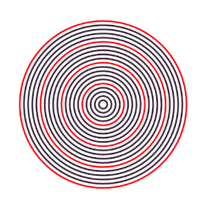

The core contrast
Conditionals answer: Should something happen?
- Pick a branch.
- Make a decision.
- Handle cases (win/lose, click/no click, door A/B/C).
Loops answer: How many times should it happen?
- Repeat a pattern.
- Generate structure (lines, circles, grids).
- Scale: 3 things → 30 things → 300 things.
Today is the day your program stops being only reactive and starts being systematic.
Bridge using the 3-door project
In your 3-door project, you likely wrote code that is “hand-built” for three doors.
Question: What if we want 50 doors?
- Do we want 50 copies of the same code block?
- Or do we want one instruction that repeats in a controlled way?
This is why loops exist: they let us scale without copy-paste.
Loops without syntax (first)
Before we write loop syntax, we adopt the loop mindset:
- Start somewhere.
- Change something each step.
- Stop at a boundary.
Key habit: Ask “What changes?” and “What stays the same?”
From repeated lines to a loop
Consider this repeated code:
ellipse(50, 200, 40, 40);
ellipse(100, 200, 40, 40);
ellipse(150, 200, 40, 40);
ellipse(200, 200, 40, 40);Prompt: What changes? What stays the same?
Once we identify the changing part (x), we can generate it systematically with a loop:
for (int x = 50; x <= 200; x += 50) {
ellipse(x, 200, 40, 40);
}Read it as: “Start x at 50. While x is at most 200, draw. Each time, add 50.”
Practice drill: loops
Use these to practice repetition, counters, and systematic change. Start simple and test often.
1) Concentric circles
Use a for() loop to draw exactly 20 concentric circles with the center in the middle of the canvas.
Make the stroke color change gradually from circle to circle.
2) Evens 0 to 100
Write a loop that prints all the even numbers from 0 to 100 to the console.
(Even numbers are divisible by 2, e.g., 6, 28, 40.)
3) Odds 19 down to -3
Write a loop that will print all the odd numbers from 19 down to -3.
(Odd numbers are not divisible by 2, e.g., 19, 29, -3.)
4) Zebra canvas
Use a loop to convert your canvas into a zebra (alternating stripes).
5) Concentric circles with “every k-th one” highlighted (Bonus: Modulo)
Re-create the screenshot using a loop: draw many concentric circles and make every k-th circle a different color.
Hint: this uses modulo (%), which we will introduce separately.

Modulo mini-box (open when ready)
Modulo is the “remainder” operator. For example:
7 % 3is1because 7 = 3·2 + 110 % 5is0because 10 divides evenly by 5
In loops, modulo helps us select “every k-th item”:
// Every 7th circle (i = 7, 14, 21, ...)
if (i % 7 == 0) {
stroke(255, 0, 0); // red
} else {
stroke(0); // black
}Translation: “If i is divisible by 7, it’s a highlight ring.”
Closing frame
Takeaway: If conditionals let your program decide, loops let your program scale.
- Conditionals = choice (branching).
- Loops = construction (repeat systematically).